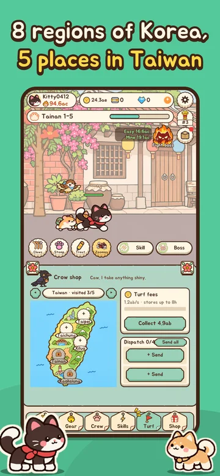
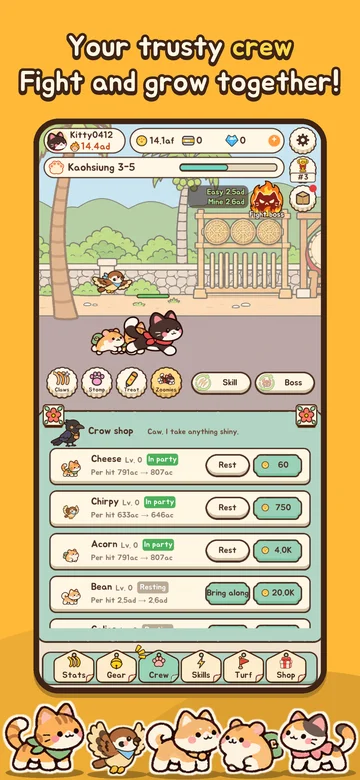
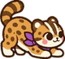
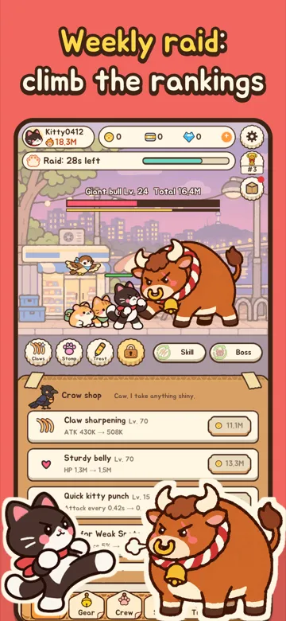
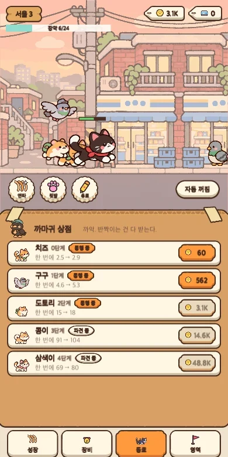

Kitty Kingpin: Idle Alley Cat
From the back alleys to the whole world
A cute tuxedo alley cat takes over the neighborhood, one block at a time. Fight neighborhood animals for coins, power up at the Crow Shop, and beat the boss to reach the next neighborhood. An idle game in portrait mode.
Out now App Store ↗ Press kit (in Korean) →
 About the game
About the game

This neighborhood is mine now!
 Platform
Platform- iOS
 Genre
Genre- Idle RPG
 Status
Status- Out on the App Store since November 13, 2026. A Google Play version is on the way. Questions are welcome by email.
 Contact
Contact- contact.studiooct@gmail.com
 Privacy
Privacy- Privacy policy
 By the numbers
By the numbers
- 13Regions
- 390Stages
- 10Crew
- 5Skins

Beat up the local animals
From pigeons and stray dogs to Asiatic black bears, about 90 kinds of animals that really live in Korea and Taiwan show up as rivals and bosses. Beat each boss with your own paws to take over its turf.

8 regions of Korea, 5 places in Taiwan: 390 stages
Every region has its own scenery, its own animals and its own bosses. Turf fees keep piling up in neighborhoods you take over, even while the game is closed, up to 8 hours' worth.
Korea
- Seoul
- Gyeonggi
- Chungcheong
- Jeolla
- Gyeongsang
- Busan
- Gangwon
- Taebaek
Taiwan
- Taipei
- Taichung
- Xiluo
- Tainan
- Kaohsiung
Bosses waiting for you
- Fat Cat Boss
- Raccoon dog boss
- Bullfrog chief
- Asiatic black bear
Across the sea to Taiwan
Once you've taken over all of Korea, all the way to Taebaek, you fall asleep in a box and wind up on a ship to Taiwan. From Taipei to Kaohsiung, pick a fight with the toughest crew in each place and beat them. Recruit five new crew members along the way.
 Your trusty crew
Your trusty crew
10
Five from Korea, five from Taiwan, and not all of them are cats! Bring up to three along to fight by your side. Send resting crew on trips, and they'll bring back bundles of loot.
 CheeseLeaps in and pounces with its front paws
CheeseLeaps in and pounces with its front paws ChirpyDives from the sky beak first
ChirpyDives from the sky beak first AcornEarns you more coins from fights
AcornEarns you more coins from fights BeanSlow but heavy headbutts
BeanSlow but heavy headbutts CalicoIncreases the money people give you
CalicoIncreases the money people give you LanlanSnatches with its claws
LanlanSnatches with its claws LuluPulls its neck back, then pecks
LuluPulls its neck back, then pecks NiuniuSlow, but a very heavy headbutt
NiuniuSlow, but a very heavy headbutt
ShihuLeaps far and pounces HouHurls a banana
HouHurls a banana

Weekly raid
Hit the unbeatable Giant bull as hard as you can before time runs out. Your total damage sets your rank for the week.
Skins: Tuxedo · Cheese · Bombay · Norwegian Forest · Persian
 Screens
Screens
4 01
01Fight, earn, beat the boss
Fight the local animals to earn coins. Once you are strong enough, challenge the boss and move to the next stage.
 02
02Power up at the Crow Shop
The Crow Shop takes anything shiny. Trade your coins for sharper claws, more health, and better gear.

03Build your crew, collect turf dues
The neighborhoods you take over earn you dues. Send out your crew to collect even more while you're away.
 04
04From city alleys to the mountains
Start in a downtown alley, cross the countryside and climb into the mountains. A named boss waits in every region.
Screens may change with updates. Shown in Korean.
Videos
2- Skills
- Alley folks
Captions are in Korean.
Press kit (in Korean)
Writing about the game? Grab the icon, screenshots and videos in one download.